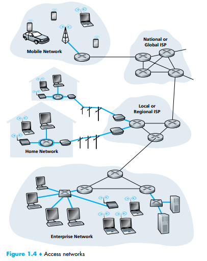
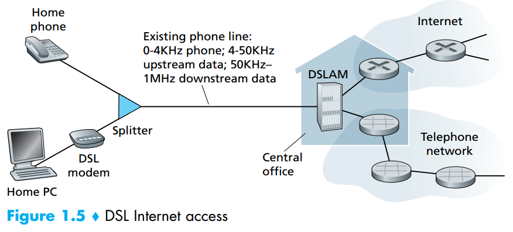
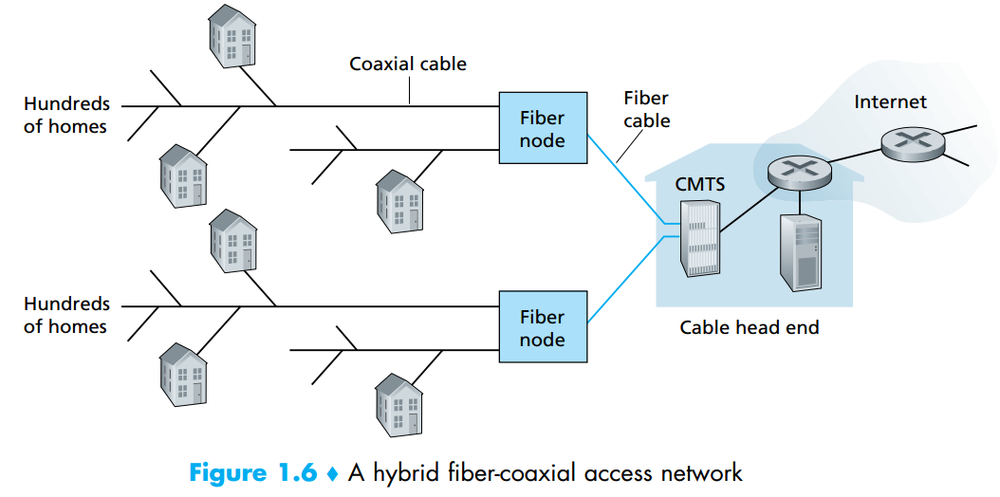
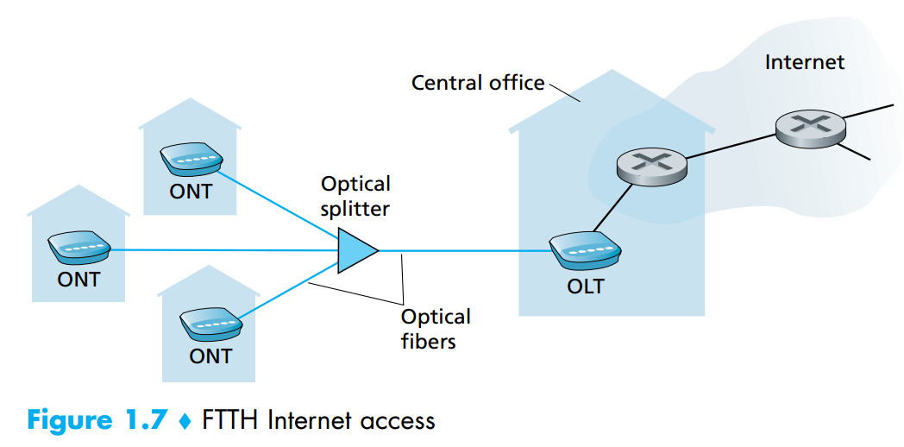
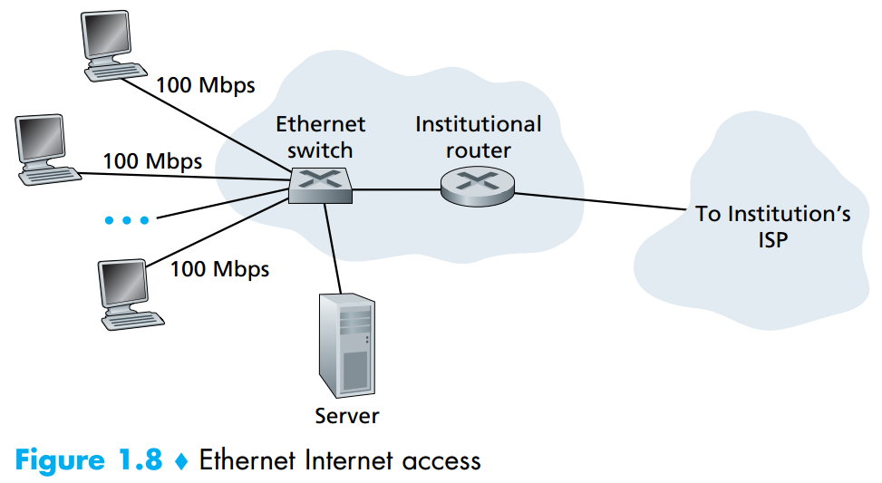
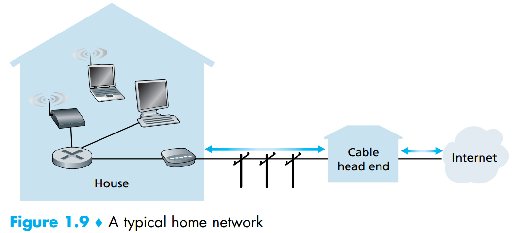

Access Networks
Having considered the applications and end systems at the “edge of the network,” let’s next consider the access network—the network that physically connects an end system to the first router (also known as the “edge router”) on a path from the end system to any other distant end system. Figure 1.4 shows several types of access networks with thick, shaded lines, and the settings (home, enterprise, and wide-area mobile wireless) in which they are used.

Home Access: DSL, Cable, FTTH, Dial-Up, and Satellite
In developed countries today, more than 65 percent of the households have Internet
access, with Korea, Netherlands, Finland, and Sweden leading the way with more than
80 percent of households having Internet access, almost all via a high-speed broadband
connection [ITU 2011]. Finland and Spain have recently declared high-speed Internet
access to be a “legal right.” Given this intense interest in home access, let’s begin our
overview of access networks by considering how homes connect to the Internet.
Today, the two most prevalent types of broadband residential access are digital
subscriber line (DSL) and cable. A residence typically obtains DSL Internet access
from the same local telephone company (telco) that provides its wired local phone
access. Thus, when DSL is used, a customer’s telco is also its ISP. As shown in
Figure 1.5, each customer’s DSL modem uses the existing telephone line (twistedpair copper wire, which we’ll discuss in Section 1.2.2) to exchange data with a digital subscriber line access multiplexer (DSLAM) located in the telco’s local central
office (CO). The home’s DSL modem takes digital data and translates it to highfrequency tones for transmission over telephone wires to the CO; the analog signals
from many such houses are translated back into digital format at the DSLAM.

The residential telephone line carries both data and traditional telephone signals simultaneously, which are encoded at different frequencies:
- A high-speed downstream channel, in the 50 kHz to 1 MHz band
- A medium-speed upstream channel, in the 4 kHz to 50 kHz band
- An ordinary two-way telephone channel, in the 0 to 4 kHz band
This approach makes the single DSL link appear as if there were three separate
links, so that a telephone call and an Internet connection can share the DSL link at
the same time. (We’ll describe this technique of frequency-division multiplexing in Section 1.3.1). On the customer side, a splitter separates the data and telephone signals arriving to the home and forwards the data signal to the DSL modem. On the
telco side, in the CO, the DSLAM separates the data and phone signals and sends
the data into the Internet. Hundreds or even thousands of households connect to a
single DSLAM [Dischinger 2007].
The DSL standards define transmission rates of 12 Mbps downstream and
1.8 Mbps upstream [ITU 1999], and 24 Mbps downstream and 2.5 Mbps upstream
[ITU 2003]. Because the downstream and upstream rates are different, the access is
said to be asymmetric. The actual downstream and upstream transmission rates
achieved may be less than the rates noted above, as the DSL provider may purposefully limit a residential rate when tiered service (different rates, available at different prices) are offered, or because the maximum rate can be limited by the distance
between the home and the CO, the gauge of the twisted-pair line and the degree of
electrical interference. Engineers have expressly designed DSL for short distances
between the home and the CO; generally, if the residence is not located within 5 to 10
miles of the CO, the residence must resort to an alternative form of Internet access.
While DSL makes use of the telco’s existing local telephone infrastructure,
cable Internet access makes use of the cable television company’s existing cable
television infrastructure. A residence obtains cable Internet access from the same
company that provides its cable television. As illustrated in Figure 1.6, fiber optics
connect the cable head end to neighborhood-level junctions, from which traditional coaxial cable is then used to reach individual houses and apartments. Each
neighborhood junction typically supports 500 to 5,000 homes. Because both fiber
and coaxial cable are employed in this system, it is often referred to as hybrid
fiber coax (HFC).

Cable internet access requires special modems, called cable modems. As with a
DSL modem, the cable modem is typically an external device and connects to the
home PC through an Ethernet port. (We will discuss Ethernet in great detail in
Chapter 5.) At the cable head end, the cable modem termination system (CMTS)
serves a similar function as the DSL network’s DSLAM—turning the analog signal
sent from the cable modems in many downstream homes back into digital format.
Cable modems divide the HFC network into two channels, a downstream and an
upstream channel. As with DSL, access is typically asymmetric, with the downstream channel typically allocated a higher transmission rate than the upstream
channel. The DOCSIS 2.0 standard defines downstream rates up to 42.8 Mbps and
upstream rates of up to 30.7 Mbps. As in the case of DSL networks, the maximum
achievable rate may not be realized due to lower contracted data rates or media
impairments.
One important characteristic of cable Internet access is that it is a shared
broadcast medium. In particular, every packet sent by the head end travels downstream on every link to every home and every packet sent by a home travels on the
upstream channel to the head end. For this reason, if several users are simultaneously downloading a video file on the downstream channel, the actual rate at which
each user receives its video file will be significantly lower than the aggregate cable
downstream rate. On the other hand, if there are only a few active users and they
are all Web surfing, then each of the users may actually receive Web pages at the
full cable downstream rate, because the users will rarely request a Web page at
exactly the same time. Because the upstream channel is also shared, a distributed
multiple access protocol is needed to coordinate transmissions and avoid collisions.
(We’ll discuss this collision issue in some detail in Chapter 5.)
Although DSL and cable networks currently represent more than 90 percent of
residential broadband access in the United States, an up-and-coming technology that
promises even higher speeds is the deployment of fiber to the home (FTTH)
[FTTH Council 2011a]. As the name suggests, the FTTH concept is simple—
provide an optical fiber path from the CO directly to the home. In the United States,
Verizon has been particularly aggressive with FTTH with its FIOS service [Verizon
FIOS 2012].
There are several competing technologies for optical distribution from the
CO to the homes. The simplest optical distribution network is called direct fiber,
with one fiber leaving the CO for each home. More commonly, each fiber leaving the central office is actually shared by many homes; it is not until the fiber
gets relatively close to the homes that it is split into individual customer-specific
fibers. There are two competing optical-distribution network architectures that
perform this splitting: active optical networks (AONs) and passive optical networks (PONs). AON is essentially switched Ethernet, which is discussed in
Chapter 5.
Here, we briefly discuss PON, which is used in Verizon’s FIOS service.
Figure 1.7 shows FTTH using the PON distribution architecture. Each home has an optical network terminator (ONT), which is connected by dedicated optical
fiber to a neighborhood splitter. The splitter combines a number of homes (typically
less than 100) onto a single, shared optical fiber, which connects to an optical line
terminator (OLT) in the telco’s CO. The OLT, providing conversion between optical
and electrical signals, connects to the Internet via a telco router. In the home, users
connect a home router (typically a wireless router) to the ONT and access the Internet via this home router. In the PON architecture, all packets sent from OLT to the
splitter are replicated at the splitter (similar to a cable head end).

FTTH can potentially provide Internet access rates in the gigabits per second
range. However, most FTTH ISPs provide different rate offerings, with the higher
rates naturally costing more money. The average downstream speed of US FTTH
customers was approximately 20 Mbps in 2011 (compared with 13 Mbps for cable
access networks and less than 5 Mbps for DSL) [FTTH Council 2011b].
Two other access network technologies are also used to provide Internet access
to the home. In locations where DSL, cable, and FTTH are not available (e.g., in
some rural settings), a satellite link can be used to connect a residence to the Internet at speeds of more than 1 Mbps; StarBand and HughesNet are two such satellite
access providers. Dial-up access over traditional phone lines is based on the same
model as DSL—a home modem connects over a phone line to a modem in the ISP.
Compared with DSL and other broadband access networks, dial-up access is excruciatingly slow at 56 kbps.
Access in the Enterprise (and the Home): Ethernet and WiFi
On corporate and university campuses, and increasingly in home settings, a local area network (LAN) is used to connect an end system to the edge router. Although there are many types of LAN technologies, Ethernet is by far the most prevalent access technology in corporate, university, and home networks. As shown in Figure 1.8, Ethernet users use twisted-pair copper wire to connect to an Ethernet switch, a technology discussed in detail in Chapter 5. The Ethernet switch, or a network of such interconnected switches, is then in turn connected into the larger Internet. With Ethernet access, users typically have 100 Mbps access to the Ethernet switch, whereas servers may have 1 Gbps or even 10 Gbps access.

Increasingly, however, people are accessing the Internet wirelessly from laptops, smartphones, tablets, and other devices (see earlier sidebar on “A Dizzying
Array of Devices”). In a wireless LAN setting, wireless users transmit/receive packets to/from an access point that is connected into the enterprise’s network (most
likely including wired Ethernet), which in turn is connected to the wired Internet. A
wireless LAN user must typically be within a few tens of meters of the access point.
Wireless LAN access based on IEEE 802.11 technology, more colloquially known
as WiFi, is now just about everywhere—universities, business offices, cafes, airports, homes, and even in airplanes. In many cities, one can stand on a street corner
and be within range of ten or twenty base stations (for a browseable global map of
802.11 base stations that have been discovered and logged on a Web site by people
who take great enjoyment in doing such things, see [wigle.net 2012]). As discussed
in detail in Chapter 6, 802.11 today provides a shared transmission rate of up to
54 Mbps.
Even though Ethernet and WiFi access networks were initially deployed in enterprise (corporate, university) settings, they have recently become relatively common
components of home networks. Many homes combine broadband residential access
(that is, cable modems or DSL) with these inexpensive wireless LAN technologies to
create powerful home networks [Edwards 2011]. Figure 1.9 shows a typical home
network. This home network consists of a roaming laptop as well as a wired PC; a
base station (the wireless access point), which communicates with the wireless PC; a
cable modem, providing broadband access to the Internet; and a router, which interconnects the base station and the stationary PC with the cable modem. This network
allows household members to have broadband access to the Internet with one member roaming from the kitchen to the backyard to the bedrooms.

Wide-Area Wireless Access: 3G and LTE
Increasingly, devices such as iPhones, BlackBerrys, and Android devices are being
used to send email, surf the Web, Tweet, and download music while on the run.
These devices employ the same wireless infrastructure used for cellular telephony
to send/receive packets through a base station that is operated by the cellular network provider. Unlike WiFi, a user need only be within a few tens of kilometers (as
opposed to a few tens of meters) of the base station.
Telecommunications companies have made enormous investments in so-called
third-generation (3G) wireless, which provides packet-switched wide-area wireless
Internet access at speeds in excess of 1 Mbps. But even higher-speed wide-area
access technologies—a fourth-generation (4G) of wide-area wireless networks—are
already being deployed. LTE ( for “Long-Term Evolution”—a candidate for Bad
Acronym of the Year Award) has its roots in 3G technology, and can potentially
achieve rates in excess of 10 Mbps. LTE downstream rates of many tens of Mbps
have been reported in commercial deployments. We’ll cover the basic principles of
wireless networks and mobility, as well as WiFi, 3G, and LTE technologies (and
more!) in Chapter 6.